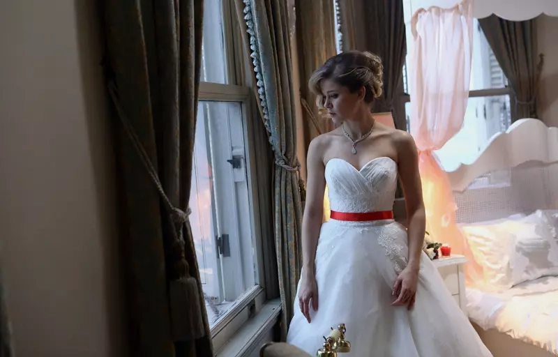

1. Bölüm: Zoraki Yolculuk
Kerim Almanya’da özgür bir hayat sürerken, ailesi onu evlendirmek üzere Türkiye’ye çağırır. Çocuklukta yapılan evlilik anlaşması tekrar gündeme gelir. Hülya ise planını devreye sokar.
Hayat Şarkısı, geçmişleri farklı iki gencin zoraki bir evlilik üzerinden gelişen karmaşık ilişkilerini, aşkı ve aile bağlarını konu alan duygusal bir Türk dizisidir. 2016-2017 yılları arasında yayımlanan dizi, dramatik yapısı ve güçlü oyunculuklarıyla izleyiciyi derinden etkilemiştir. Almanya'da başlayan hikâye, İstanbul’un farklı yüzlerine uzanırken, kaderin insanları nasıl bir araya getirdiğini sorgulatır.
Kararlı, zeki ve gerektiğinde manipülatif biri. Küçüklüğünden beri Kerim'e âşık ve onunla evlenmek için büyük planlar yapmıştır.
Almanya’da eğitim almış, modern bir genç adam. Zorla yapılan evliliğe dirense de zamanla Hülya’yla arasında güçlü bir bağ kurulur.
Kerim’in annesi. Oğlunu mutlu görmek ister ama geleneksel değerlerinden de kolay kolay vazgeçemez.
Kerim'in babası. Geleneklerine bağlı, sert bir adamdır. Ailesini kontrol altında tutmak ister.
Hülya’nın ablası, duygusal ve fedakâr bir kadındır. Geçmişte Kerim’le evlenmesi planlanmıştır ama işler değişir.
Kerim Almanya’da özgür bir hayat sürerken, ailesi onu evlendirmek üzere Türkiye’ye çağırır. Çocuklukta yapılan evlilik anlaşması tekrar gündeme gelir. Hülya ise planını devreye sokar.
Kerim’in gönlünde başka biri vardır. Fakat Hülya, ablası Melek yerine onunla evlenmek için plan yapar. Bu planın Kerim’i nasıl etkileyeceği belirsizdir.
Hülya’nın planları yavaş yavaş ortaya çıkmaya başlar. Kerim, evliliğin arkasındaki gerçekleri sorgulamaya başlar. Hülya ise duygularını bastırmak zorundadır.
Melek, yaşananları öğrenir ve büyük bir hayal kırıklığına uğrar. Aile içinde gerilim tırmanır. Hülya’nın Kerim’e olan sevgisi mi yoksa takıntısı mı ağır basacak?
Kerim, evliliği devam ettirme ya da Almanya’ya dönme arasında seçim yapmak zorunda kalır. Hülya ise hayatının en büyük riskini alır.
Kerim, Hülya’nın geçmişine dair parçaları birleştirmeye başlar. Hülya ise hayatı boyunca içinde taşıdığı yaraları ve ailesiyle ilgili sırları gizlemeye çalışır. Bu sırlar Kerim’le olan ilişkisini tehlikeye atar.
Melek’in yaşadığı hayal kırıklığı, Çamoğlu ailesiyle Cevher ailesi arasındaki ipleri iyice gerer. Kerim, Hülya’ya güvenip güvenemeyeceğini sorgularken Hülya, sevgisini ispat etmek için büyük bir adım atar.
Cevher ailesinde gerilim zirveye ulaşır. Bayram Bey, Hülya’nın aileye uygun olmadığını düşünerek evliliğe karşı tavır alır. Hülya ve Kerim ise bu baskıya rağmen birlik olmaya çalışır. Ancak her ikisi de ailelerinin gölgesinden kurtulmakta zorlanır.
Uzun yıllar matematik öğretmeni olarak analitik düşünme becerilerimi geliştirdim, şimdi ise bu becerileri yazılım dünyasında yaratıcı projelere dönüştürüyorum. Front-End geliştirme alanında kendimi geliştiriyor; HTML, CSS, JavaScript ve React gibi teknolojilerle kullanıcı odaklı, şık ve işlevsel web arayüzleri tasarlamaya odaklanıyorum. Kendimi sürekli geliştirmeye açık, detaylara önem veren ve her projede yeni şeyler öğrenmeye istekli bir geliştiriciyim. Problem çözmeyi, fikir üretmeyi ve kodla estetik bir deneyim sunmayı çok seviyorum.
Bu projeyi oluştururken hem teknik becerilerimi geliştirmek hem de sevdiğim bir diziyi yaratıcı bir şekilde tanıtmak istedim. "Hayat Şarkısı" dizisi, karakter derinliği ve duygu yoğunluğu ile beni her zaman etkilemiştir. Bu nedenle, kod yazarken sadece bir web sayfası değil; aynı zamanda diziye olan bağımı da ifade edebileceğim estetik bir deneyim yaratmak istedim. Projenin her aşamasında HTML'in yapısal gücünü, CSS'in görsel becerilerini ve kullanıcı deneyimine verdiğim önemi birleştirmeye çalıştım. Bu proje, hem gelişim sürecimi hem de tutkumun yansımasıdır.
Kullanıcı odaklı, sade ve etkileyici bir arayüz tasarlamaya özen gösterdim. Tasarım sürecinde: